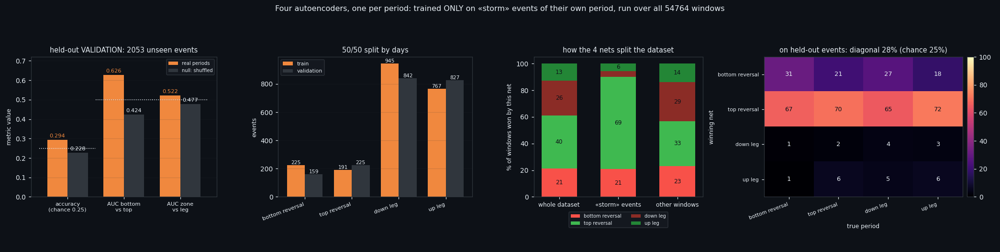
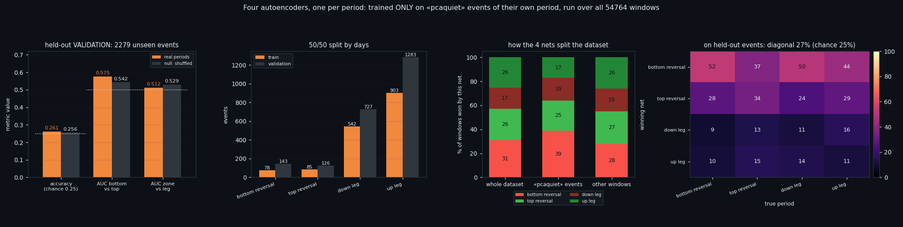
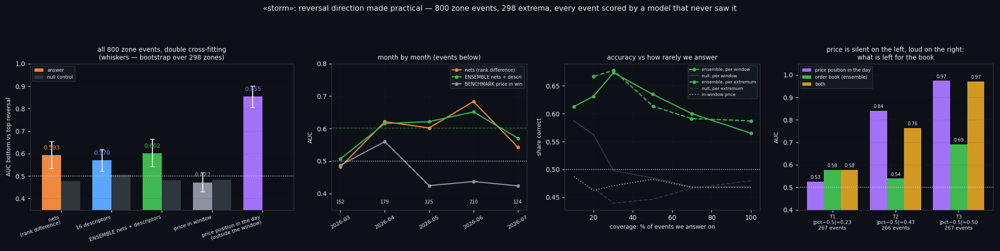
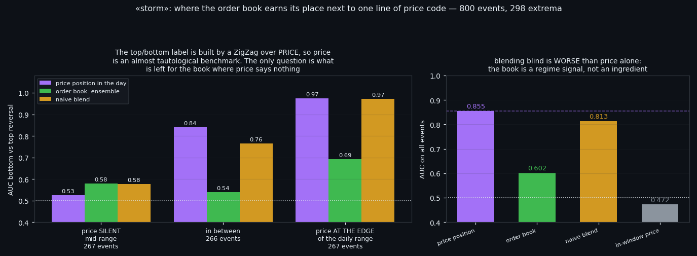
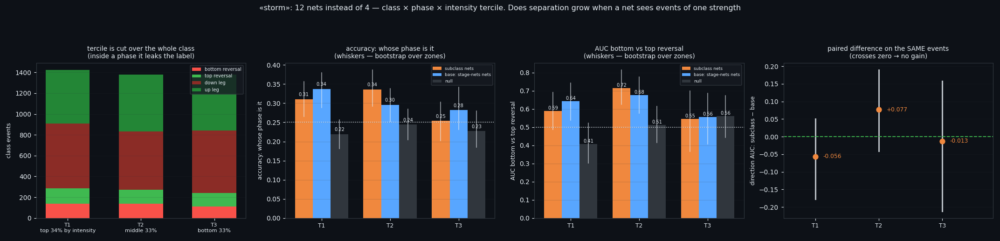
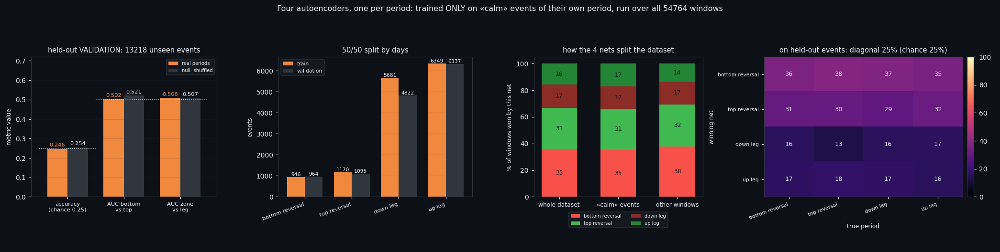

Sixteen Networks, One Working Answer — and the Price Benchmark That Nearly Killed It
In shortWe trained sixteen one-class autoencoders on Bitcoin order-book windows: four market states, and inside each state one network per phase of the price move. Each network saw only its own kind of window and nothing else — no negative examples at all. One thing out of sixteen works: inside a storm you can tell a bottom reversal from a top one. On half the data that looked like AUC 0.6264; measured properly on all 800 events it is 0.5928. Then a one-line price benchmark scored 0.8548 on the same question. This article is about what survives that, and where it survives.
Narrated walkthrough · plays from YouTube when you press play.
① Sixteen networks that never saw a counter-example
Two markings of the same seconds go into this study, and neither is produced here.
The market state comes from four detectors trained in an earlier study — storm, PCA-quiet, class 2 and calm — applied to windows of 8 order-book features × 210 seconds, out-of-fold, so every window is judged by a model that never saw it. The phase of the move comes from a ZigZag study: 1% ZigZag marks local extrema, a zone is the stretch while price stays within 0.5% of the extremum, and that yields four phases — bottom reversal, top reversal, down leg, up leg.
Then for each of the four states we train four networks, one per phase. The network for "storm in a bottom reversal" sees only storm events that fell inside a bottom reversal — nothing else. No windows from other phases, no windows from other states, and above all no negative examples. This is deliberate: the question "how does a storm at a reversal differ from a storm mid-leg" is not two labels of one phenomenon, it is two kinds of window. So the tool is a one-class Conv1D autoencoder, and its answer to any window is the reconstruction error.
Three decisions about the split, each with its own reason.
We split days, not events. Windows lie on a continuous 210-second grid; neighbours are nearly identical — the same hour of market, shifted by three minutes. A random split trains on the window at 14:00 and "tests" on the window at 14:03. Of the 129 days with storm events, 64 are declared validation. The price of honesty: halves are unequal in events (191 train against 225 validation for top reversals), because days differ in how busy they are.
The split is shared by all four networks. Otherwise one network's validation days would be another's training days, and the joint question "whose error is smaller" would be a contest in memorisation.
Early stopping may not look at the validation half. Where to stop is a parameter, so another 10% is carved out of the training half for it.
And the errors of four networks cannot be compared raw. A network trained on 945 examples has lower error on any window than one trained on 191, simply because it saw more. So each error is first converted to a rank within its own network's distribution, and only then compared.
Beside every number stands its null control: the same four networks on shuffled phase labels, same split, same validation. It answers "how much accuracy accrues merely from four networks having been trained on four different chunks of history" — and the answer is: quite a lot. In storm, the null control reaches an accuracy of 0.2275 where chance is 0.25.

② One thing works, and only in one class
On the validation half, three questions are asked of the same four errors: whose phase is this (four-way, chance 0.25), bottom reversal versus top, and reversal zone versus the body of a leg.
- storm — accuracy 0.2943 against a null of 0.2275; direction 0.6264 against a null of 0.4241; zone-versus-leg 0.5221 against 0.4772;
- PCA-quiet — 0.2612 / 0.2555, direction 0.5751 / 0.5425: inside its own noise;
- class 2 — the only other hint, and a weak one: zone versus leg 0.5471 against 0.5052;
- calm — 0.2458 / 0.2538, direction 0.5025 / 0.5206. Every metric at or below its own null. Calm events look the same in all four phases.
So: one working cell out of sixteen networks and twelve metrics. Direction — the thing this project has failed to read for months — is readable inside a storm, and nowhere else.
That is the point at which most write-ups stop. It is also the point at which the number is least trustworthy: it is measured on half the data, has no confidence interval, no operating threshold, and no answer to "how many times out of ten".

③ Making the number usable — and watching it shrink
Four changes, in order.
Double cross-fitting. In the first pass, networks learned on the first half of days and were measured on the second, so half the events had no score at all. Now a mirror pair of networks is trained on the validation half and used to score the training half. Every event gets an answer from a model that never saw it, and the sample doubles from 384 to 800 zone events (384 bottoms, 416 tops, 298 distinct extrema).
The first honest consequence: 0.6264 becomes 0.5928 [0.5329; 0.6533]. Half-data estimates run optimistic; that difference is ordinary variance on a few hundred events, and it is exactly why a single number without an interval is not a result.
An ensemble, assembled without fitting. Beside the networks we put the same 16 descriptors (8 levels + 8 in-window slopes) used in the phase study, and average the two answers' ranks — no weights, because any weight tuned on these 800 events would be fitting. Descriptors alone give 0.5698; the ensemble 0.6024 [0.5423; 0.6633]. The gain over networks alone is 0.01 — comfortably inside the noise. Adding in-window price to the ensemble makes it worse (0.569).
Bootstrap over zones, not windows. A zone holds 2.68 windows on average and they are nearly identical. Resampling windows pretends they are independent and returns an interval 1.59× narrower than the honest one ([0.564; 0.6399] against [0.5423; 0.6633]). The unit of resampling has to be the unit of independence.
A working threshold. The answer is turned into a rank within its fold, and a signal is given only on the extreme q% at each end; everything else is "don't know". At q=0.15 — that is, answering on 30% of events — 67.4% are correct (68% of "bottom" calls, 67% of "top" calls), against 49.8% for the null control at the same coverage and 47.1% for in-window price. Tightening further does not help: at q=0.05 accuracy falls back to 61.3%, because only dozens of events remain in the tails.
Month by month the signal is not constant: 0.6516 in 2026-06, but 0.507 in 2026-03 — nothing at all in one month out of five. That is the ceiling on how much this deserves to be trusted.

④ The benchmark that nearly kills it — and the one place it does not
Price inside the same 210-second window scores 0.4722 on "top or bottom" — nothing, exactly as expected: at an extremum price does not move for three and a half minutes.
But there is a second price benchmark, and it is not polite. Take the percentile of the current price among the observations of the last 24 hours — one line of code, information the networks never see because it lies outside their window. It scores 0.8548 [0.8038; 0.8994].
The honest reading is not "the order book is useless". It is that our label is nearly a function of that benchmark: a top and a bottom are defined by a ZigZag over price, so where price sits in its own recent range is an almost tautological predictor. Hiding it would be dishonest; surrendering to it would be sloppy. The right move is to stratify by it and ask what is left for the book where price is silent.
Split the events into thirds by how far the percentile sits from the middle of the day:
- the third where price is mid-range (|percentile − 0.5| ≈ 0.234, 267 events): price scores 0.5251 — i.e. nothing — and the order book 0.5781;
- the middle third (0.469): price 0.8405, book 0.5391;
- the third where price is at the edge of its daily range (0.498): price 0.974, book 0.6916.
That is the whole practical truth of this line. When price has already committed to an edge of its range, it answers the question itself and the book adds nothing worth having. When price sits in the middle and says nothing, the book is the only thing that speaks — modestly, but it is the only one speaking.
One more warning that follows directly: a naive blend of the two, averaging their ranks, scores 0.8134 — worse than price alone at 0.8548. The book is a regime-conditional signal, not an ingredient to stir in.

⑤ A hypothesis that failed: networks on subclasses
An earlier study showed that in the quiet classes, events inside reversal zones are stronger — the top tercile of intensity turns up there more often. That suggests an obvious improvement: if phases differ mainly by the strength of the event, then a network trained on events of a single strength should separate them better, because it does not have to spend capacity on the strong-versus-weak difference that has nothing to do with phase. So: twelve networks per class instead of four, one per phase × intensity tercile.
One design decision decided everything here. The tercile is cut across the whole class, not inside the phase. Cutting inside the phase would (a) put 34/33/33 in every column by construction, leaving nothing to compare, and (b) — fatally — make the tercile depend on the phase label: to choose which trio of networks an event belongs to you would already have to know the answer. That is a leak into the problem statement itself, and no metric would reveal it afterwards.
Everything is compared on the same validation events: subclass networks, the base networks from step ① (not retrained — literally the same models), and a null control of subclass networks on shuffled phase labels. The headline number is the paired difference with a bootstrap over zones, because both estimates come from one sample.
Result: separation did not grow. In storm the paired differences are -0.056 [-0.1771; 0.0502] for the top tercile, +0.077 [-0.0406; 0.19] for the middle and -0.013 [-0.2113; 0.1584] for the weakest. Not one interval clears zero. In the quiet classes the split simply runs out of data: PCA-quiet lost 5 of its 12 networks to the 40-example minimum, because its zone events are rare to begin with and thirds cut them by three again.
There is a side observation worth more than the hypothesis. Look at the base networks' column: the same four models read direction differently in different terciles — 0.6433 on the strongest events, 0.6773 on ordinary ones, 0.555 on the weakest. The direction signal does not live in the most violent storms, as intuition suggests. It lives in the middling ones, and disappears in the weak.

⑥ What this adds up to
Four things survive.
One. Out of sixteen one-class networks, one cell reads: direction of a reversal inside a storm. Measured on all 800 events with every event scored by a model that never saw it, it is 0.5928 [0.5329; 0.6533] against a null of 0.4774, ensemble 0.6024, and at a working threshold 67% correct on 30% of events. It is real and it is small.
Two. "Storm is the special class" is not established. In calm, the same 16 descriptors score 0.5882 [0.5492; 0.6288] against a null of 0.5222 on 4,175 events — a narrower interval than storm's, because there are five times more events. What is special about storm is that networks work there; the descriptors work in calm just as well.
Three. A one-line price benchmark beats all of it at 0.8548, for a reason worth naming out loud: the label is built by a ZigZag over price. The order book earns its place only in the regime where that benchmark is silent — price mid-range — and there it is 0.5781 against price's 0.5251. Blending the two naively makes things worse.
Four. The subclass hypothesis failed cleanly, which is its own kind of result: cutting events by strength did not sharpen anything, and the direction signal turns out to live in the middling storms rather than the strongest.
All of it ships with a research diary written as an executable recipe: commands in order, the reasoning behind each choice, the traps we actually fell into — including a 97%-accuracy result that was pure memorisation, and a tercile cut that would have leaked the answer into the question — and a table of control numbers with tolerances so you can tell whether your own run reproduced ours. Take your own data and check.

All our bots have been tested live. The best one is Line 7.
More than a dozen bots were built from this research. Line 7 — two small transformers that read 160 hours of order book as one picture — is the only one ahead of buy & hold in live trading: +5.44% since 5 Oct while BTC moved −5.29%. Every trade is in the report.
Everything on this site is research, not financial advice.
How to read this site in 5 minutes · All studies as one .md for AI · All research
← All research